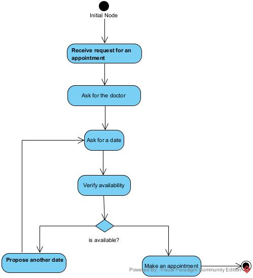
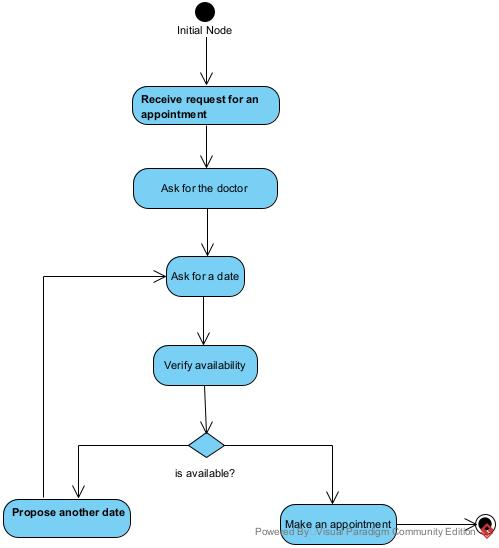

Object-oriented Information Systems
Information systems are responsible for collecting, storing, processing and providing knowledge about information from a range of sources. Information systems are an integrated set of components that bring together hardware, software, networking, database storage as well as the human process that may be involved. These systems are integral to the products and services that we rely on as a society and as such it is imperative that they are well-designed and developed. Object oriented design and development provides a structured approach to creating sustainable and manageable solutions. The module examines the different elements of an information system from design through to processing and storage. You will explore the fundamental concepts behind object-oriented development using UML as a tool for analysis and design. Further to this, we will make use of Python to provide concrete experience of object-oriented development.
In this module we will:
- Contextualise the role of information systems.
- Understand object-oriented analysis and design.
- Engage with the issues of professionalism (including coding conventions and good practices).
- Develop object-oriented software using Python and Java.
- Create GUIs using Python.
- Introduce relational algebra and set theory.
- Contextualise database concepts, design and implementation.
- Introduce SQL development.
- Develop web applications using Python.
- Explore the integration of information system components into business processes.
- Introduce big data technologies.


 
